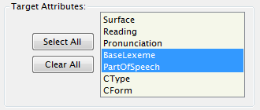
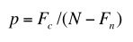
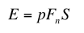
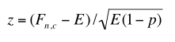

ChaKi.NETでは、文内の語や語群の生起情報に関して以下の各アルゴリズムによる 統計を取ることができます。
- Raw Frequency
- MI (Mutual Information) Score
- N-gram
- FSM (Frequent Sequence Mining)
これらの統計は常にKWICリストに対して行われる点に注意が必要です。つまり、メモリ上に 配置されているデータに対してのローカルな統計処理であり、DBクエリによる他の検索処理とは 性格が異なっています。（コーパスに存在するすべての文に対して統計を取るためには 全文検索を行ってその結果に対して処理を行えばよいのですが、この方法はコーパスのサイズに よってはメモリ不足となる可能性が高くなります）。
まず、Collocation処理の（アルゴリズムによらない）共通手順を説明します。
- まず、検索によりKWICリストを生成します（省略）。
全文検索結果の場合は、文の内容がすべてRight（右文脈）に入ったKWICリストとみなされます。
- Search Conditionsパネルにおいて、Collocationタブに移ります（下図）。
{kind=link}
- このタブの中でCollocationパラメータを設定します。最初に使用したいアルゴリズムを"Type of Statistics"ドロップダウンリストから選択します。これ以外のパラメータの意味はアルゴリズム毎に異なりますので次節以降で説明します。
- Commandパネルの"Collocation"ボタンを押して、処理を開始します。
- ビューがGridに変わり、結果が一覧表示されます（下図は、MI Scoreの結果の例）。
{kind=link}
- Collocation結果は、元データとして使用したKWICリストを親として履歴ツリーに追加されます（下図）。
{kind=link}
次に、各アルゴリズムの詳細を説明します。
Raw Frequency
KWICのCenter語を基準として、左右にオフセットした各相対位置に存在する語の頻度リストを取ります。 この統計により、例えば「の」という語の2ワード左の位置にはどのような語が多く現れるか、といったデータを 知ることができます。
{kind=link}
例えば、-5カラムの2列目が"10"であるということは、中心語から見て5語前の位置には、語「、（記号-読点）」が 10回現れていることを示します。
カラムヘッダをクリックすると、そのカラムでソートすることができます。2回続けて押すと逆順にソートされます。
※Raw Frequencyのパラメータ
-
語のターゲット属性
"Target Attributes"リストボックスで、Collocation処理において考慮に入れる語属性と無視する語属性を 指定します。リストボックスは複数選択可能で、選択された語属性は、語の一致比較で使用されますが、 選択解除された語属性は一致比較で無視されます。

結果のCollocation Viewにおいても、無視された語属性のカラムは非表示となります。
{kind=link}
-
左右文脈範囲
"Window Size L", "R"の２つのボックスに左右それぞれの方向に調べるべきオフセットの最大値を指定します。 例えば、L=2, R=3 とすると、-2～+3の範囲で頻度を調べます。
MI Score
ある語 n が中心語cの周囲一定のウィンドウ・スパンに出現する頻度(Fn,c)、 その中心語 n のコーパス全体での総出現頻度(Fn)、 およびその語 c のコーパス全体での総出現頻度(Fc)とを元に、 語の共起に関する各種統計情報量を算出します。
（ここで、N=コーパスの総語数; S=ウィンドウ・スパンのサイズ）

で表されます。 期待される共起の回数は、

このpとEを用いて、Z scoreは次の式で表されます。

これらの統計量は、各語に対してすべて一度に計算され、１行に表示されます。 （画面は前節にあるので省略。）
- 重要なことですが、これらの共起頻度は、単一コーパスに対してしか有効ではありません。 従って、複数のコーパスをまたがるKWIC検索結果に対して、この統計を行うことはできません。 （これは実装上の制約です。）
- 中心語が中心位置に現れる場合と、その他の位置に現れる場合とは区別する必要がありますので、 中心位置に現れた場合は、"<<語>>" のように囲って表示しています。
- Fn,cは、KWICリストに現れるペアのみをカウントします。KWICリストはペア(n,c)の全ての 出現を含んでいるとは限りません。一般には正しいFn,cはKWIC中でカウントする数よりも大きくなります。 このように、MIスコアが共起の出現確率を反映しない場合がありますので注意が必要です。 KWICリストを（検索条件に基づく偏った）サンプリングセットに取って近似的なMIスコアを求めていると 解釈するべきです。
※MI Scoreのパラメータ
- 語のターゲット属性
Raw Frequencyの場合と同じ意味を持ちます。
-
左右文脈範囲
Fn,cを数える際に、この範囲に存在すればカウントされます。
N-gram
n-gramには、中心語から見て左方向にサーチされる"N-gram(Left)"と右方向の"N-gram(Right)"の２種類がありますが、 基本的なアルゴリズムは同じもので、指定した方向への拡張語列の中で、指定した頻度以上の出現回数を持つものを すべて求めます。
{kind=link}
本プログラムのN-gramアルゴリズムでは、Maximal Sequenceだけでなく、そのサブシーケンスについても、条件を 満たす限りリストに含められます。たとえば、
a b c a b c d a b c d eという3つの文（aが中心語）に対する右n-gramは、Maximal Sequenceとしては"a b c d"になりますが、そのサブシーケンスを含め
a b c d (2) a b c (3) a b (3)の３個すべてがリストされます。（括弧内は頻度）
※N-gramのパラメータ
- Min. Frequency
最低この回数以上出現するN-gramのみを求めます。1回しか現れないシーケンスは処理内で無視していますので、 この回数は 2 以上が有効です。それ以下の値は2と同じ意味を持ちます。
- Min. Length
最低この長さの語数から成るN-gramのみを求めます。 長さのカウントには、中心語を含めます。 0 を指定すると長さは考慮されません。
なお、N-gramに限り、表層形のみを対象（他の属性は無視）としています。
Frequent Sequence Mining (FSM)
このアルゴリズムは他と異なり、KWICに対する共起統計ではなく、文集合に対する頻出語列（パターン）のマイニングを行うものです。 元となるKWICの文脈情報(Left,Center,Rightの区切り）は使用しません。
本アルゴリズムは、工藤さんのprefix-span(http://chasen.org/~taku/software/prefixspan/ )を元にしています。 prefix-spanに加え、
- Maximal Sequenceのみを求める
- Gap条件を加味する
という２点の拡張を行っています。
第１点については、N-gramの節で説明したものと同じ概念であり、FSMでは他系列を含むような最大のパターンのみを求めます。
第２点は、必ずしも連続して現れる語のシーケンスではなく、間に不特定の語列を指定した長さ・回数だけ含むような
「飛び石パターン」を求めることができることを意味します。
{kind=link}
Sequenceカラムがパターンを表しています。"[...]"で区切られた部分が連続パターンを表します。 例えば次の
[ 広田 ] [ は ]は、Gapが1つ存在するようなパターンを意味します。
"IDs"カラムは、そのパターンが出現している文のIDをカンマ区切りで示す文字列です。
※FSMのパラメータ
- 語のターゲット属性
Raw Frequencyの場合と同じ意味を持ちます。
- Min. Frequency
最低この回数以上出現するパターンのみを求めます。
- Min. Length
最低この長さの語数から成るパターンのみを求めます。
- Max Gap Width
Gapとして許される不特定語の数を指定します。例えば"2"であれば、2語までの不特定語を挟むようなパターンを許します。
0を指定するとGapを含まない指定となります。-1を指定すると無制限に長いGapを持つことが可能です。
- Num of Gaps
パターンが含んでもよいGap数を指定します。（次項と合わせ、最大値または特定値の意味となります。） 0を指定するとGapを含まない指定となります。-1を指定するとGap数は無制限となります。
- Exact Match
チェックを入れると、前項の"Num of Gaps"が正確にその数だけ出現するパターンのみを求めます。チェックを はずすと、Num of Gaps以下の数のGapを含むパターンを求めます。
- Stopwords
パターンに含めたくない語の表層形を半角スペースで区切っていくつでも指定できます。 StopwordはGap長の計算には含められます。